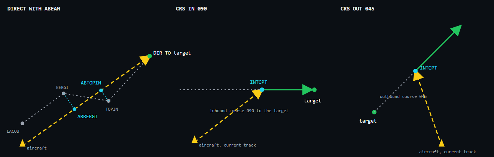
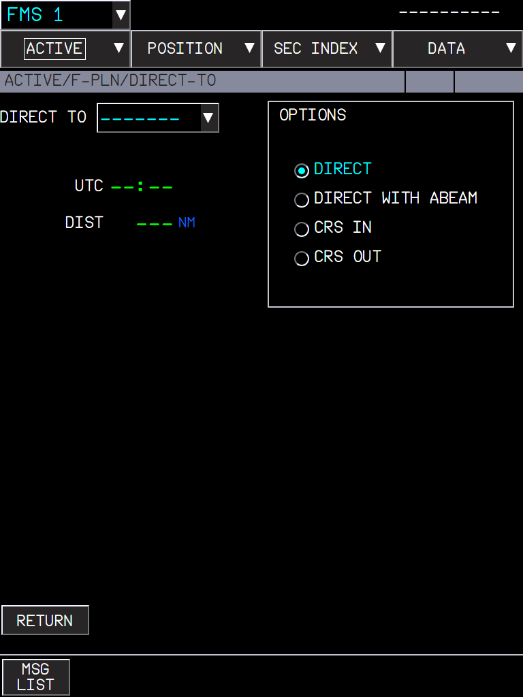
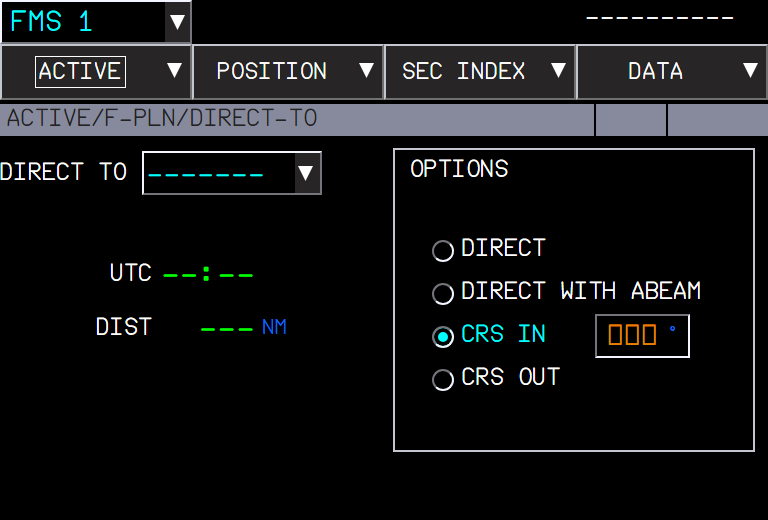

The DIRECT TO page of the A380 (FCOM DSC-22-FMS-20-30, DIRECT TO) has four options. FBW showed them but only the first one worked. All four work now:
| Option | What the FMS builds |
|---|---|
| DIRECT | A direct leg from the aircraft to the target waypoint (as before). |
| DIRECT WITH ABEAM | The direct leg, plus an abeam point for each waypoint it bypasses: the point of the direct leg abeam that waypoint, named AB + the first 5 letters of the waypoint (BERGI gives ABBERGI). |
| CRS IN | An inbound course to the target: the aircraft continues on its current track to the intercept point INTCPT on that course, then flies the course to the target. |
| CRS OUT | An outbound course from the target: the aircraft continues on its current track to the intercept point INTCPT on the outbound course, then follows it (without overflying the target). |



With DIRECT WITH ABEAM, the temporary F-PLN shows (ABEAM PTS) in place of the abeam points until the direct is inserted (FCOM P 162).
| Situation | What you should see |
|---|---|
| DIRECT WITH ABEAM, waypoints bypassed | One ABxxxxx point per bypassed waypoint, on the direct leg. |
| DIRECT WITH ABEAM, a waypoint whose abeam is not between the aircraft and the target | No abeam point for it. |
| CRS IN / OUT with a course that can be intercepted ahead | INTCPT on the course, then the course. |
| CRS IN more than 160° from the current track, parallel, or behind | No intercept point: a course to the target. |
| CRS OUT parallel to the track | No intercept point: a course from the target. |
| CRS IN / OUT without a course | No DIR TO until a course is entered. |
| Limitation | Why | What to do |
|---|---|---|
| Abeam point names can repeat letters of the waypoint. | The FCOM rule is AB + 5 characters; two waypoints starting with the same 5 letters give the same name. | - |
| No intercept point when the geometry does not allow one. | Following the FCOM limits (160°, parallel, behind). | Use DIRECT, or another course. |